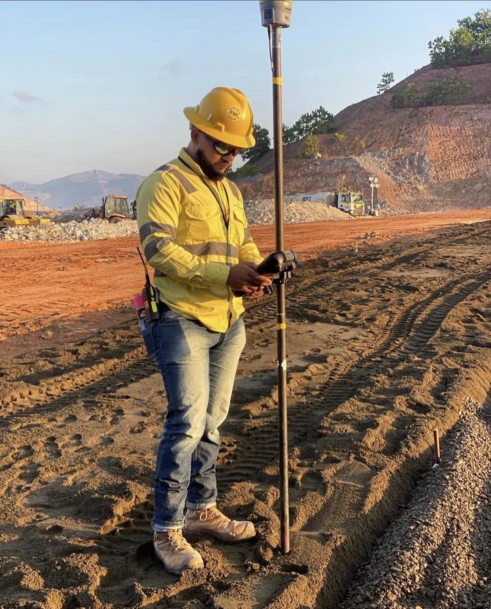
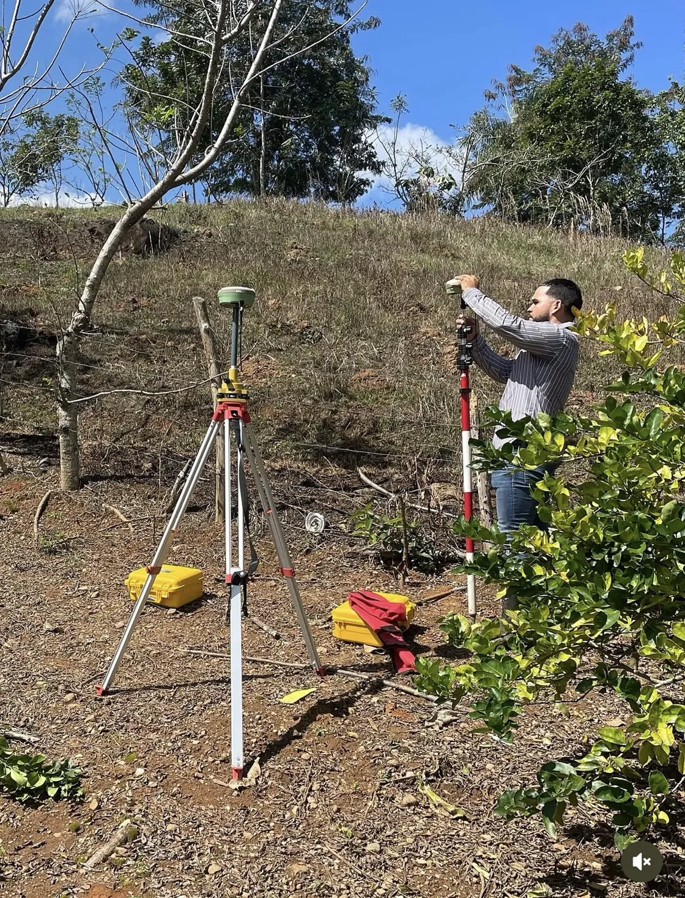
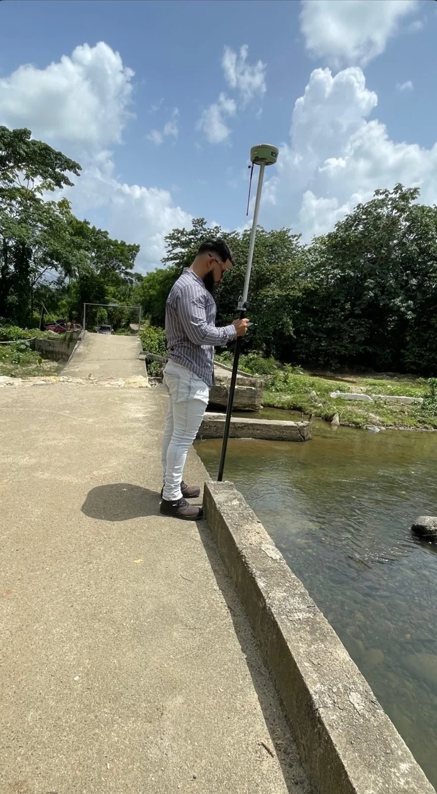
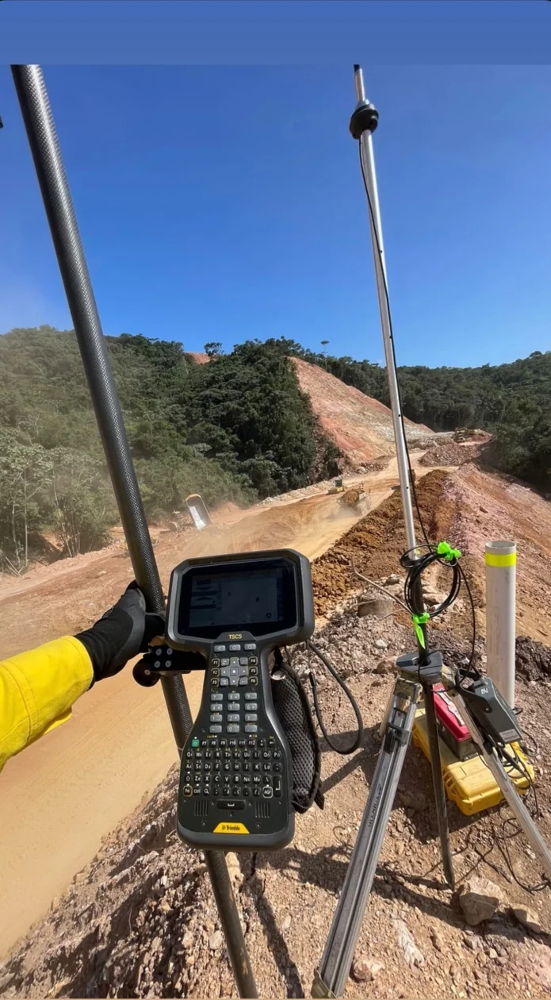
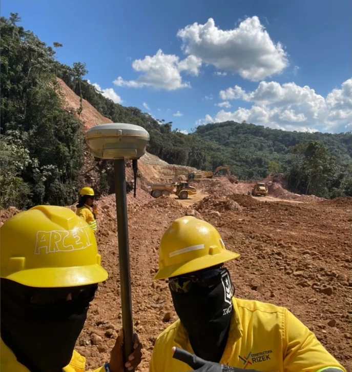

01 /
Límites · Identificación
Deslinde
Delimitación e individualización de terrenos mediante los procedimientos correspondientes.
Consultar servicioDel levantamiento del terreno a los trámites de tu propiedad. En AGRIMTOP trabajamos para que cada decisión comience con información clara y mediciones precisas.

Asesoría y trabajo técnico para propietarios, inversionistas y proyectos de construcción.
Delimitación e individualización de terrenos mediante los procedimientos correspondientes.
Consultar servicioDivisión de inmuebles en parcelas o porciones, de acuerdo con las necesidades del proyecto.
Consultar servicioTraslado de puntos, ejes y referencias del plano al terreno para orientar la ejecución de obras.
Consultar servicioApoyo técnico en procesos relacionados con la regularización de derechos sobre inmuebles.
Consultar servicioConsulta y revisión de información catastral para conocer mejor la situación de un inmueble.
Consultar servicioRepresentación de las variaciones de elevación del terreno para su estudio y planificación.
Consultar servicioServicios topográficos vinculados a la planificación y organización técnica de terrenos.
Consultar servicioProcesos técnicos para la integración de inmuebles, sujetos a las condiciones aplicables.
Consultar servicio
AGRIMTOP / TRABAJO EN TERRENOAGRIMTOP, encabezada por el agrimensor Anderson Gutiérrez, ofrece servicios de agrimensura y topografía con base en Bonao y atención a nivel nacional.
Ya sea para conocer los límites de una propiedad, avanzar un trámite o preparar un proyecto de construcción, el primer paso es contar con información técnica confiable.
Escuchamos lo que necesitas y orientamos los próximos pasos.
Atención a las mediciones, al terreno y a cada proyecto.
Una mirada real al trabajo técnico, las herramientas y los terrenos donde se hacen las mediciones.
Cinco miradas al trabajo de campo. Selecciona una fotografía para verla completa.



Completa los datos básicos y prepararemos tu mensaje para conversar directamente por WhatsApp.